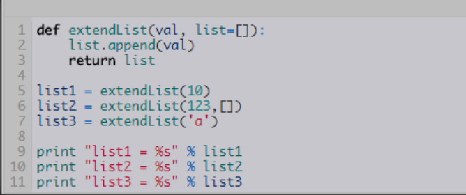
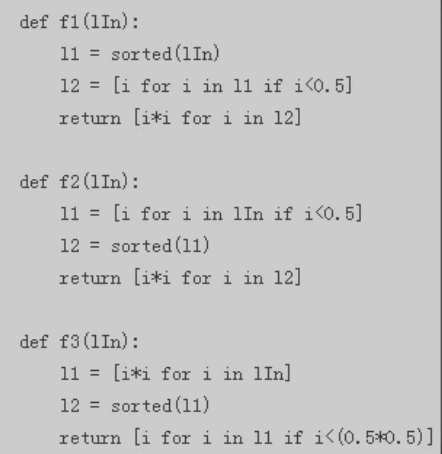
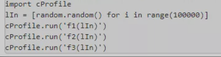

第六节 Python面试
1. 是什么
1-1 什么是pickling和unpickling？
Pickle模块读入任何Python对象，将它们转换成字符串，然后使用dump函数将其转储到一个文件中——这个过程叫做pickling。反之从存储的字符串文件中提取原始Python对象的过程，叫做unpickling。
1-2 什么是Python装饰器？
Python装饰器是Python中的特有变动，可以使修改函数变得更容易。
1-3 Lambda函数是什么？
这是一个常被用于代码中的单个表达式的匿名函数。
1-4 *args，**kwargs？参数是什么？
如果我们不确定要往函数中传入多少个参数，或者我们想往函数中以列表和元组的形式传参数时，那就使要用*args；如果我们不知道要往函数中传入多少个关键词参数，或者想传入字典的值作为关键词参数时，那就要使用**kwargs。
1-5 unittest是什么？
在Python中，unittest是Python中的单元测试框架。它拥有支持共享搭建、自动测试、在测试中暂停代码、将不同测试迭代成一组，等等的功能。
1-6 构造器是什么？
构造器是实现迭代器的一种机制。它功能的实现依赖于yield表达式，除此之外它跟普通的函数没有两样。
1-7 doc string是什么？
Python中文档字符串被称为docstring，它在Python中的作用是为函数、模块和类注释生成文档。
1-8 负索引是什么？
Python中的序列索引可以是正也可以是负。如果是正索引，0是序列中的第一个索引，1是第二个索引。如果是负索引，（-1）是最后一个索引而（-2）是倒数第二个索引。
1-9 模块和包是什么？
在Python中，模块是搭建程序的一种方式。每一个Python代码文件都是一个模块，并可以引用其他的模块，比如对象和属性。
一个包含许多Python代码的文件夹是一个包。一个包可以包含模块和子文件夹。
1-10 垃圾回收是什么？
在Python中，为了解决内存泄露问题，采用了对象引用计数，并基于引用计数实现自动垃圾回收。
1-11 CSRF是什么？
CSRF是伪造客户端请求的一种攻击，CSRF的英文全称是Cross Site Request Forgery，字面上的意思是跨站点伪造请求。
2、HOW
2-1 如何在Python中拷贝一个对象？
如果要在Python中拷贝一个对象，大多时候你可以用copy.copy()或者copy.deepcopy()。但并不是所有的对象都可以被拷贝。
2-2 如何用Python删除一个文件？
使用函数os.remove("file")
2-3 如何将一个数字转换成一个字符串？
你可以使用自带函数str()将一个数字转换为字符串。
如果你想要八进制或者十六进制数，可以用oct()或hex()。
2-4 Python是如何进行内存管理的？
Python的内存管理是由私有heap空间管理的。所有的Python对象和数据结构都在一个私有heap中。程序员没有访问该heap的权限，只有解释器才能对它进行操作。
为Python的heap空间分配内存是由Python的内存管理模块进行的，其核心API会提供一些访问该模块的方法供程序员使用。
Python有自带的垃圾回收系统，它回收并释放没有被使用的内存，让它们能够被其他程序使用。
2-5 如何实现tuple和list的转换？
- 以list作为参数将tuple类初始化，将返回tuple类型
- 以tuple作为参数将list类初始化，将返回list类型
2-6 Python里面如何生成随机数？
在python中用于生成随机数的模块是random，在使用前需要import. 如下例子可以酌情列举：
random.random()：生成一个0-1之间的随机浮点数random.uniform(a, b)：生成[a,b]之间的浮点数random.randint(a, b)：生成[a,b]之间的整数random.randrange(a, b, step)：在指定的集合[a,b)中，以step为基数随机取一个数random.choice(sequence)：从特定序列中随机取一个元素，这里的序列可以是字符串，列表，元组等
2-7 如何在一个function里面设置一个全局的变量
如果要给全局变量在一个函数里赋值，必须使用global语句。
global VarName的表达式会告诉Python， VarName是一个全局变量，这样Python就不会在局部命名空间里寻找这个变量了
2-8 Python如何实现单例模式？其他23种设计模式python如何实现？
单例模式主要有四种方法：__new__、共享属性、装饰器、import。
其他23种设计模式可基本分为创建型、结构型和行为型模式。
创建模式，提供实例化的方法，为适合的状况提供相应的对象创建方法。
结构化模式，通常用来处理实体之间的关系，使得这些实体能够更好地协同工作。
行为模式，用于在不同的实体建进行通信，为实体之间的通信提供更容易，更灵活的通信方法。
各模式的实现可根据其特点编写代码（限于篇幅，此处不做示例）
2-9 如何判断单向链表中是否有环
首先遍历链表，寻找是否有相同地址，借此判断链表中是否有环。如果程序进入死循环，则需要一块空间来存储指针，遍历新指针时将其和储存的旧指针比对，若有相同指针，则该链表有环，否则将这个新指针存下来后继续往下读取，直到遇见NULL，这说明这个链表无环。
2-10 如何遍历一个内部未知的文件夹？
常用的有以下这几种办法：os.path.walk()，os.walk()，listdir
2-11 mysql数据库如何分区、分表？
分表可以通过三种方式：mysql集群、自定义规则和merge存储引擎。
分区有四类：
- RANGE 分区：基于属于一个给定连续区间的列值，把多行分配给分区。
- LIST 分区：类似于按RANGE分区，区别在于LIST分区是基于列值匹配一个离散值集合中的某个值来进行选择。
- HASH分区：基于用户定义的表达式的返回值来进行选择的分区，该表达式使用将要插入到表中的这些行的列值进行计算。这个函数可以包含MySQL 中有效的、产生非负整数值的任何表达式。
- KEY 分区：类似于按HASH分区，区别在于KEY分区只支持计算一列或多列，且MySQL 服务器提供其自身的哈希函数。必须有一列或多列包含整数值。
2-12 如何对查询命令进行优化？
- a. 应尽量避免全表扫描，首先应考虑在 where 及 order by 涉及的列上建立索。
- b. 应尽量避免在 where 子句中对字段进行 null 值判断，避免使用
!=或<>操作符，避免使用 or 连接条件，或在where子句中使用参数、对字段进行表达式或函数操作，否则会导致权标扫描 - c. 不要在 where 子句中的“=”左边进行函数、算术运算或其他表达式运算，否则系统将可能无法正确使用索引。
- d. 使用索引字段作为条件时，如果该索引是复合索引，那么必须使用到该索引中的第一个字段作为条件时才能保证系统使用该索引，否则该索引将不会被使用。
- e. 很多时候可考虑用 exists 代替 in
- f. 尽量使用数字型字段
- g. 尽可能的使用
varchar/nvarchar代替char/nchar - h. 任何地方都不要使用
select * from t，用具体的字段列表代替“*”，不要返回用不到的任何字段。 - i. 尽量使用表变量来代替临时表。
- j. 避免频繁创建和删除临时表，以减少系统表资源的消耗。
- k. 尽量避免使用游标，因为游标的效率较差。
- l. 在所有的存储过程和触发器的开始处设置
SET NOCOUNT ON，在结束时设置 SET NOCOUNT OFF - m. 尽量避免大事务操作，提高系统并发能力。
- n. 尽量避免向客户端返回大数据量，若数据量过大，应该考虑相应需求是否合理。
2-13 如何理解开源？
开源，即开放源代码。开源诞生于软件行业，它不仅仅代表软件源代码的开放，本身即意味着自由、共享和充分利用资源。开源是一种精神，是一种文化，如今已经成为软件业发展的大势所趋。
2-14 如何理解MVC/MTV框架？
MVC就是把Web应用分为模型（M），控制器（C）和视图（V）三层，他们之间以一种插件式的、松耦合的方式连接在一起。MTV模式本质上和MVC是一样的，也是为了各组件间保持松耦合关系，只是定义上有些许不同。
2-15 MSSQL的死锁是如何产生的？
如下是死锁产生的四个必要条件：
互斥条件：指进程对所分配到的资源进行排它性使用，即在一段时间内某资源只由一个进程占用。如果此时还有其它进程请求资源，则请求者只能等待，直至占有资源的进程用毕释放。
请求和保持条件：指进程已经保持至少一个资源，但又提出了新的资源请求，而该资源已被其它进程占有，此时请求进程阻塞，但又对自己已获得的其它资源保持不放。
不剥夺条件：指进程已获得的资源，在未使用完之前，不能被剥夺，只能在使用完时由自己释放。
环路等待条件：指在发生死锁时，必然存在一个进程——资源的环形链，即进程集合{P0，P1，P2，···，Pn}中的P0正在等待一个P1占用的资源；P1正在等待P2占用的资源，……，Pn正在等待已被P0占用的资源。
2-16 Sql注入是如何产生的，如何防止？
程序开发过程中不注意规范书写sql语句和对特殊字符进行过滤，导致客户端可以通过全局变量POST和GET提交一些sql语句正常执行。产生Sql注入。下面是防止办法：
- a. 过滤掉一些常见的数据库操作关键字，或者通过系统函数来进行过滤。
- b. 在PHP配置文件中将
Register_globals=off;设置为关闭状态 - c. SQL语句书写的时候尽量不要省略小引号(tab键上面那个)和单引号
- d. 提高数据库命名技巧，对于一些重要的字段根据程序的特点命名，取不易被猜到的
- e. 对于常用的方法加以封装，避免直接暴漏SQL语句
- f. 开启PHP安全模式：
Safe_mode=on; - g. 打开
magic_quotes_gpc来防止SQL注入 - h. 控制错误信息：关闭错误提示信息，将错误信息写到系统日志。
- i. 使用mysqli或pdo预处理。
2-17 xxs如何预防？
XSS漏洞难以检测，但是为了WEB安全仍需要尽力避免：
针对反射型和存储型XSS，需要服务端和前端共同预防，针对用户输入的数据做解析和转义，对于前端开发而言，则是善于使用escape，针对data URI内容做正则判断，禁止用户输入非显示信息。
对于DOM XSS，由于造成XSS的原因在于用户的输入，因此在前端，需要特别注意用户输入源，并对可能造成的XSS的操作需要进行字串转义。
2-18 如何生成共享秘钥？ 如何防范中间人攻击？
密钥的生成是通过使用全局配置命令完成的：对于不可输出密钥是<crypto key generate rsa label {label string}，而对于可输出密钥则是<crypto key generate rsa exportable label {label string}>。标记（label）是可选择的；如果没有指定标记，那么密钥名称将是hostname.domain-name。
对于中间人的攻击，可以采用如下防范手段：
- a. 通过采用动态ARP检测、DHCP Snooping等控制操作来加强网络基础设施
- b. 采用传输加密
- c. 使用CASBs（云访问安全代理）
- d. 创建RASP（实时应用程序自我保护）
- e. 阻止自签名证书
- f. 强制使用SSL pinning
- g. 安装DAM（数据库活动监控）
3、Difference
3-1 数组和元组之间的区别？
数组在python中叫作列表。列表可以修改，而元组不可以修改，如果元组中仅有一个元素，则要在元素后加上逗号。
元组和列表的查询方式一样。元组只可读不可修改，如果程序中的数据不允许修改可用元组。
3-2 _new_和_init_的区别？
__init__是当实例对象创建完成后被调用的，然后设置对象属性的一些初始值。__new__是在实例创建之前被调用的，因为它的任务就是创建实例然后返回该实例，是个静态方法。
也就是，__new__在__init__之前被调用，__new__的返回值（实例）将传递给__init__方法的第一个参数，然后__init__给这个实例设置一些参数。
3-3 Python中单下划线和双下划綫的区别？
- "单下划线" 开始的成员变量叫做保护变量，意思是只有类对象和子类对象自己能访问到这些变量；
- "双下划线" 开始的是私有成员，意思是只有类对象自己能访问，连子类对象也不能访问到这个数据。
3-4 浅拷贝与深拷贝的区别是？
在python中，对象赋值实际上是对象的引用。
浅拷贝，没有拷贝子对象，所以原始数据改变，子对象会改变，而深拷贝，包含对象里面的自对象的拷贝，所以原始对象的改变不会造成深拷贝里任何子元素的改变。
3-5 使用装饰器的单例和使用其他方法的单例，在后续使用中，有何区别？
Import方法改变了类本身，new方法，但是只是把所有实例对象共享属性，每次产生一个新对象。算作伪单例，共享属性方法实例化了许多个相同属性。所以，装饰器方法最为实用。
3-6 多进程与多线程的区别？
a. 简而言之,一个程序至少有一个进程，一个进程至少有一个线程。
b. 线程的划分尺度小于进程，使得多线程程序的并发性高。
c. 另外，进程在执行过程中拥有独立的内存单元，而多个线程共享内存，从而极大地提高了程序的运行效率。
d. 线程在执行过程中与进程还是有区别的。每个独立的线程有一个程序运行的入口、顺序执行序列和程序的出口。但是线程不能够独立执行，必须依存在应用程序中，由应用程序提供多个线程执行控制。
e. 从逻辑角度来看，多线程的意义在于一个应用程序中，有多个执行部分可以同时执行。但操作系统并没有将多个线程看做多个独立的应用，来实现进程的调度和管理以及资源分配。这就是进程和线程的重要区别。
3-7 select和epoll的区别？
a. select实现需要自己不断轮询所有fd集合，直到设备就绪，期间可能要睡眠和唤醒多次交替。而epoll其实也需要调用epoll_wait不断轮询就绪链表，期间也可能多次睡眠和唤醒交替，但是它是设备就绪时，调用回调函数，把就绪fd放入就绪链表中，并唤醒在epoll_wait中进入睡眠的进程。虽然都要睡眠和交替，但是select在“醒着”的时候要遍历整个fd集合，而epoll在“醒着”的时候只要判断一下就绪链表是否为空就行了，这节省了大量的CPU时间。
b. select每次调用都要把fd集合从用户态往内核态拷贝一次，并且要把current往设备等待队列中挂一次，而epoll只要一次拷贝，而且把current往等待队列上挂也只挂一次（在epoll_wait的开始，注意这里的等待队列并不是设备等待队列，只是一个epoll内部定义的等待队列）。这也能节省不少的开销。
3-8 TCP和UDP的区别？边缘触发和水平触发的区别？
a. 基本区别：
- 基于连接与无连接
- TCP要求系统资源较多，UDP较少；
- UDP程序结构较简单
- 流模式（TCP）与数据报模式(UDP);
- TCP保证数据正确性，UDP可能丢包
- TCP保证数据顺序，UDP不保证
b. 编程中的区别
- socket()的参数不同
- UDP Server不需要调用listen和accept
- UDP收发数据用sendto/recvfrom函数
- TCP：地址信息在connect/accept时确定
- UDP：在sendto/recvfrom函数中每次均 需指定地址信息
- UDP：shutdown函数无效
3-9 HTTP连接：get和post的区别？
GET请求，请求的数据会附加在URL之后，以?分割URL和传输数据，多个参数用&连接。URL的编码格式采用的是ASCII编码，而不是uniclde，即是说所有的非ASCII字符都要编码之后再传输。
POST请求：POST请求会把请求的数据放置在HTTP请求包的包体中。上面的item=bandsaw就是实际的传输数据。
因此，GET请求的数据会暴露在地址栏中，而POST请求则不会。
3-10 varchar与char的区别？
char 长度是固定的，不管你存储的数据是多少他都会都固定的长度。而varchar则处可变长度但他要在总长度上加1字符，这个用来存储位置。
所以在处理速度上char要比varchar快速很多，但是对费存储空间，所以对存储不大，但在速度上有要求的可以使用char类型，反之可以用varchar类型。
3-11 BTree索引和hash索引的区别？
Hash 索引因其结构的特殊性，其检索效率非常高，索引的检索可以一次定位，不像B-Tree 索引需要从根节点到枝节点，最后才能访问到页节点这样多次的IO访问，所以 Hash 索引的查询效率要远高于 B-Tree 索引。但也有如下明显的缺点：
- a. Hash 索引仅仅能满足
"=","IN"和"<=>"查询，不能使用范围查询。 - b. Hash 索引无法被用来避免数据的排序操作。
- c. Hash 索引不能利用部分索引键查询。
- d. Hash 索引在任何时候都不能避免表扫描。
- e. Hash 索引遇到大量Hash值相等的情况后性能并不一定就会比B-Tree索引高。
3-12 primary key和unique的区别？
a. 作为Primary Key的域/域组不能为null，而Unique Key可以。
b. 在一个表中只能有一个Primary Key，而多个Unique Key可以同时存在。
C. 逻辑设计上讲，Primary Key一般在逻辑设计中用作记录标识，这也是设置Primary Key的本来用意，而Unique Key只是为了保证域/域组的唯一性。
3-13 ecb和cbc模式有什么区别？
ECB：是一种基础的加密方式，密文被分割成分组长度相等的块（不足补齐），然后单独一个个加密，一个个输出组成密文。
CBC：是一种循环模式，前一个分组的密文和当前分组的明文异或操作后再加密，这样做的目的是增强破解难度。ECB和CBC的加密结果是不一样的，两者的模式不同，而且CBC会在第一个密码块运算时加入一个初始化向量。
3-14 对称加密与非对称加密的区别？
对称加密，需要对加密和解密使用相同密钥的加密算法。由于其速度快，对称性加密通常在消息发送方需要加密大量数据时使用。所以，对称性加密也称为密钥加密。
而非对称加密算法需要两个密钥：公开密钥和私有密钥。公开密钥与私有密钥是一对，如果用公开密钥对数据进行加密，只有用对应的私有密钥才能解密；如果用私有密钥对数据进行加密，那么只有用对应的公开密钥才能解密。
3-15 Xrange和range的区别？
range([start,] stop[, step])，根据start与stop指定的范围以及step设定的步长，生成一个序列。
xrange 用法与 range 完全相同，所不同的是生成的不是一个list对象，而是一个生成器。要生成很大的数字序列的时候，用xrange会比range性能优很多，因为不需要一上来就开辟一块很大的内存空间。
range会直接生成一个list对象，而xrange则不会直接生成一个list，而是每次调用返回其中的一个值。
3-16 os与sys模块的区别？
前者提供了一种方便的使用操作系统函数的方法。后者提供访问由解释器使用或维护的变量和与解释器进行交互的函数。
3-17 NoSQL和关系数据库的区别？
a. SQL数据存在特定结构的表中；而NoSQL则更加灵活和可扩展，存储方式可以省是JSON文档、哈希表或者其他方式。
b. 在SQL中，必须定义好表和字段结构后才能添加数据，例如定义表的主键(primary key)，索引(index),触发器(trigger),存储过程(stored procedure)等。表结构可以在被定义之后更新，但是如果有比较大的结构变更的话就会变得比较复杂。在NoSQL中，数据可以在任何时候任何地方添加，不需要先定义表。
c. SQL中如果需要增加外部关联数据的话，规范化做法是在原表中增加一个外键，关联外部数据表。而在NoSQL中除了这种规范化的外部数据表做法以外，我们还能用如下的非规范化方式把外部数据直接放到原数据集中，以提高查询效率。缺点也比较明显，更新审核人数据的时候将会比较麻烦。
d. SQL中可以使用JOIN表链接方式将多个关系数据表中的数据用一条简单的查询语句查询出来。NoSQL暂未提供类似JOIN的查询方式对多个数据集中的数据做查询。所以大部分NoSQL使用非规范化的数据存储方式存储数据。
e. SQL中不允许删除已经被使用的外部数据，而NoSQL中则没有这种强耦合的概念，可以随时删除任何数据。
f. SQL中如果多张表数据需要同批次被更新，即如果其中一张表更新失败的话其他表也不能更新成功。这种场景可以通过事务来控制，可以在所有命令完成后再统一提交事务。而NoSQL中没有事务这个概念，每一个数据集的操作都是原子级的。
g. 在相同水平的系统设计的前提下，因为NoSQL中省略了JOIN查询的消耗，故理论上性能上是优于SQL的。
4、Practice
4-1 补充缺失的代码
def print_directory_contents(sPath) :
"""
返回该文件夹中文件的路径
"""
def print_directory_contents(sPath):
import os
for sChild in os.listdir(sPath):
sChildPath = os.path.join(sPath,sChild)
if os.path.isdir(sChildPath):
print_directory_contents(sChildPath)
else:
print sChildPath
4-2 下面这段代码的输出结果是什么？请解释。

list1 = [10, 'a']list2 = [123]list3 = [10, 'a']
新的默认列表只在函数被定义的那一刻创建一次。当extendList被没有指定特定参数list调用时，这组list的值随后将被使用。这是因为带有默认参数的表达式在函数被定义的时候被计算，不是在调用的时候被计算。
4-3 下面的代码能够运行么？请解释？
d = DefaultDict()
d['florp'] = 127
能够运行。当key缺失时，执行DefaultDict类，字典的实例将自动实例化这个数列。
4-4 将函数按照执行效率高低排序，并证明自己的答案是正确的。

按执行效率从高到低排列：f2、f1和f3。要证明这个答案是正确的，你应该知道如何分析自己代码的性能。Python中有一个很好的程序分析包，可以满足这个需求。
